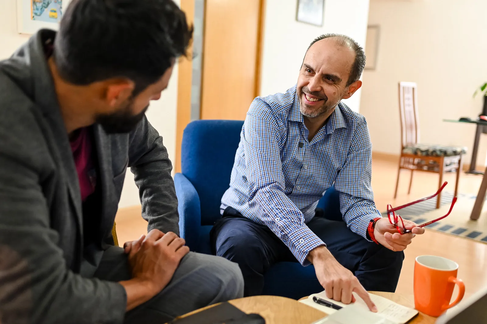

Everything new is practiced inside a safe space, so your brain can consolidate new patterns.
Human Innovation
Do you feel directionless even though everything looks fine on the outside?
I walk with you to understand what the real problem is and find your way again. You choose what you want to achieve and face.
Already clear? Book your Mapping Session.
- 14 years in the field
- 200+ one-on-one processes
- 4.5/5 average satisfaction


Is This for You?
How do I know if Fer U is for me?
You’ve already done therapy. You’ve already tried other ways to feel better. And you keep returning to the same place. What you see outside is the reflection of an inner structure you haven’t yet looked at head-on.
You probably already have an explanation:
- A relationship that isn’t working“It’s toxic; that person is the problem.”
- You react the same way every time“That’s just me: anxious, explosive, cold.”
- A mask that’s getting heavy“I’m fine; nobody needs to know.”
- A weight you’ve carried too long“That grief, that loss, that weight should have passed by now.”
- Stress you’ve normalized“It’s the price of the life I came here to build.”
- Habits that hurt you“They’re just my escape valve.”
- A team that doesn’t respond“They lack the ability or the responsibility.”
- Sales that won’t take off“It’s the market, or my clients have no money.”
Each explanation covers one part. None explains why it keeps repeating.
This is not for you if…
- You want someone else to tell you what to do, instead of building your own judgment.
- You need everything to be comfortable: here, what’s uncomfortable is named, with respect.
- You need clinical care right now: this is not a substitute for therapy, psychiatry or emergency care.
This is for you if…
- You’ve achieved and you’ve lost, and to achieve again you need to get clear on what truly matters.
- You know where you’re going, but you lack the inner system to sustain it.
If you recognized yourself, the next step isn’t another book or another retreat: it’s a 5-minute Mirror Assessment, free.
Definition
What is Human Innovation?
A cycle of self-knowledge, transformation and personal reinvention, guided from start to finish.
It’s not
Clinical therapy — it doesn’t diagnose or replace it; when needed, we work in parallel with a professional
It is
Your own path — you understand where the problem comes from, decide from yourself and redefine your origin
It’s not
Motivational coaching — it doesn’t work on mood or fleeting goals
It is
Design and measurement — maps, continuous action and validated decisions
It’s not
A generic formula for well-being
It is
A unique path on a constant structure, backed by 14 years in the field
What it is and what it isn’t: the scope of the service
What this is, and what it isn’t
Human Innovation is one-on-one personal and professional guidance. I am not a licensed psychologist, counselor, physician or other healthcare professional. I don’t diagnose or treat any condition, and I don’t prescribe, change or advise on medication. My services are not a substitute for therapy, psychiatry or medical care. If you work with a licensed professional, I am glad to work in parallel, with your consent. Results vary from person to person.
If you are in crisis, call or text 9-8-8 (Canada; English and French, with interpretation in other languages on request) or your local emergency number.
Evidence
What people say who have done it
"With Fer I got to understand myself, my relationship dynamics, my professional frustration and why I felt so lost in my life. He helped me regain my personal sovereignty, professional clarity and start a new family with my partner."
"…for pushing me to my limit, for your steady hand that didn’t let go when I needed it, for not letting me fall, for making me answer my own doubts and questions, for teaching me that I have the answers."
"Being at peace with the incredible value I can share with the world and, at the same time, knowing and embracing everything that limits me, brings me closer and closer to my definition of success: the freedom to be who I am in essence."
"We are bound together by many insecurities and challenges that you walked with me to overcome. From here, I thank you for always having a word of encouragement, for always extending a hand."
“Fer helps you understand what the real problem is and how to solve it.”
“Fer helps you trust yourself again.”
“Fer helps you find your way again and get what you want in your life.”
“Fer is like a coach, a shaman, a psychologist… and at the same time he is just Fer.”
In my students’ words. Results vary from person to person. See more testimonials How it starts
Three steps. You set the pace.
1
Mirror Assessment
5 minutes, free and private. It’s called Mirror because what you live inside shows up outside.
2
Mapping Session
60 minutes online, you and me. You read your 12-area radar and leave with a proposal tailored to you.
3
Your program
Built with you, around your time and your budget.
Mapping Session: $105 CAD · relaunch price
50% off the regular price. Credited 100% toward your program if you enroll within 4 weeks. Come with your 12-area radar done.
How we work: the method in 4 steps
Your path is not written. A human being’s development is not a destination you arrive at: it is a path you experience your whole life. What does have a beginning and an end is our work together, in cycles of introspection and creation.
1
Mapping
In your Mapping Session you see what you normally can’t, or avoid, seeing, and we decide where to start.
2
Identifying
Continuously, we look at what limits you in your thinking, identity, relationships, strategies, decisions and results.
3
Agree and experiment
Every finding turns into an agreement with yourself that you test in real life: a new way of living and performing.
4
Measure and adjust
You review your 12-area radar as a compass. What changed shapes the next cycle: the program is built along the way, around your needs.
It is self-knowledge, intention and continuous action: how you think, how you see yourself and how much autonomy you have to decide. Your reality changes because your way of being, thinking, relating and deciding changes.
You and I guide the process. Nobody hands you a path already made.
Services and prices
My services are not a ladder. They depend on your financial capacity, the time you can dedicate and the effort you are willing to put in. We always start with a Mapping Session and, from there, we tailor it to you.
- Reconnection · $1,100 CAD · 7 one-on-one sessions · 90 min. For a hard moment, a decision or something specific that limits you.
- Human Innovation Essentials · $1,950 CAD · 12 one-on-one sessions · 90 min · 12 weeks. A full reinvention process with fewer tools, for those who want deep change at a more accessible investment.
- Human Innovation Deep · $5,300 CAD · 24 one-on-one workshops · 2 hrs · 4 months. Re-architecture of your identity, habits, decisions and relationships, with your blueprints in Miro.
- Tailored · from $7,000 CAD · by application · up to 6 months. An intensive program designed with you, with guest specialists.
Payments and guarantee
- Relaunch pricing: first 10 clients in Canada or until February 28, 2027, whichever comes first; this page will say when prices rise.
- Mapping Session ($105): relaunch price, 50% off the regular price; credited 100% toward any program if you enroll within 4 weeks; not refundable otherwise.
- Prices in CAD for online services. Pay in full or in weekly or monthly payments by card (Stripe), Wise, PayPal or bank transfer; invoices on request.
- Satisfaction guarantee: if your average satisfaction falls below 7.5/10 starting in week 4 and you completed 100% of your activities, agreements and commitments, I will refund your investment and we will discontinue the service. It guarantees fit and effort, not a specific result.

Companion
I’m Fer U
When I was eight, my parents went to the U.S. to work. I studied part of elementary and middle school in Houston, Texas, and went back to Mexico at thirteen. At nineteen I went to Canada to work: I built businesses, gave work and support to other immigrants, and came back at twenty-three.
I started 18 businesses, won and lost everything, and still couldn’t inhabit my own skin with ease. What changed me wasn’t another achievement: it was returning to the origin. Today I walk your path with you, with no shortcuts and without pushing you in any direction.
Since 2008 I have invested in myself and worked on myself: that is where I experienced and transformed my humanity and my relationships.
14 years in the field and a method refined with generations of students.

Your next step
When will your moment be?
What is the origin of your problems? Do you know yours?
Start with your Mirror Assessment: 5 minutes, free and private. Then, your Mapping Session.
Remember… you are time.